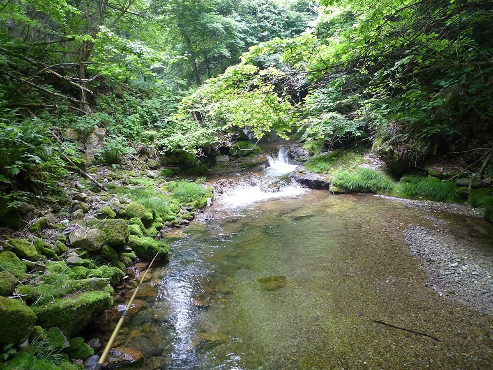
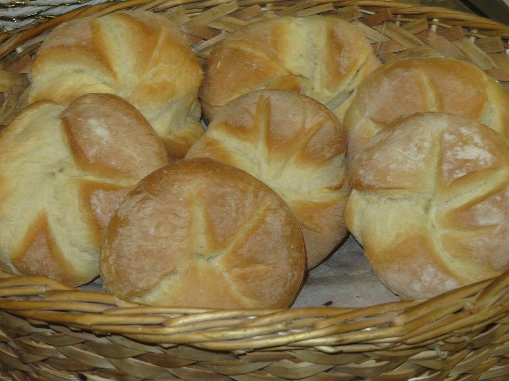

営業時間は準備中(お問い合わせください)
香川県東かがわ市町田
焼きたてを楽しみに、ふらりと立ち寄る。そんな時間のための小さなご案内ページです。
このページは、ベーカリーなないろヒュッテさまを知っていただくための試作サンプルです。商品や価格、営業時間など、お店の正確な情報はまだ載せていません。掲載の準備ができ次第、お店の言葉で書き換えられるつくりにしています。
横にスクロールできます。すべてフリー素材のイメージです。

